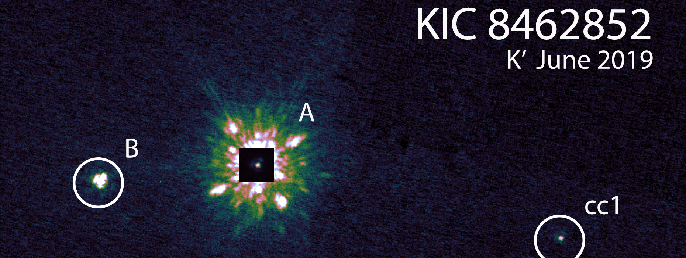

Binary Differential Imaging
Advisor: Jared Males, University of Arizona
A difficulty in direct imaging searches for faint planet or brown dwarf companions close to their host stars is to sufficiently subtract the point spread function of the host star from the image without also removing flux from the faint companion. Reference differential imaging (RDI) uses images of similar stars to build up a model reference PSF, which does not include a faint companion, which is then subtracted from the science target to reveal the flux from the companion. Binary Differential Imaging (BDI) is a similar technique which uses binary stars to build up the model PSF.
In BDI, two stars are imaged simultaneously in the same wavelength and same isoplanatic patch at high Strehl ratios. The reference PSF for one star is then built up using Karhuenen-Luove Image Processing (KLIP), which is principle component analysis (PCA) applied to images, from images of the other, and vice versa. Rodigas et al. 2015 showed that BDI has the potential to perform better at close separations than ADI.
I analyzed a subset 17 of the target list of optimal BDI star systems developed by Rodigas et al. 2015 using a homebrewed BDI+KLIP pipeline. I detected one possible candidate companion, which we will be following up with MagAO-X soon to confirm companion status.

The stellar companion to Boyajian’s star
Advisor: Adam Kraus, University of Texas
Boyajian’s Star (aka KIC 8462852, aka Tabby’s Star) has achieved noteriety in the science community due its odd and not-easily-explainable Kepler light curve (first reported in Boyajian et al. 2016, which exhibits dips of varying depths, some extremely deep (~20%), apparently aperiodic, accompanied by a long-term dimming trend. Many ideas have been explored to try to explain the observed light curve (such as Wright & Sigurdsson, Boyajian et al. 2018, Wyatt et al. 2018, and others), but none yet are clear slam dunks. It has also had some noteriety in the popular imagination due to the idea that it might be explained by a Dyson sphere, even though evidence like this and this does not support this.
Boyajian et al. 2016 also reported a possible stellar companion about 2” to the east of KIC 8462852. In our paper, we use three Keck/NIRC2 with NGS AO observational epochs spanning 5 years to show that this object exhibits common proper motion that is not consistent with chance alignment, and conclude that is a bound wide stellar companion, KIC 8462852 B, with separation of ~880 AU. We also show that two other objects in the frame are unassociated.
The companion is not likely to be currently affecting the light curve of KIC 8462852, however the wide binary likely influenced the environment around KIC 8462852 A during formation and evolution, which could be a piece of the puzzle of this system.
Orbit Fitting of Wide Stellar Binaries with Gaia
Advisor: Adam Kraus, University of Texas
The monitoring of orbits is one of the oldest tools used to measure the properties and evolution of astrophysical systems. (Mis)alignment of angular momentum vectors between stellar rotation, binary orbits, circumstellar disks, and plantary system orbits all encode information about the dynamical history of the system. Wide stellar binaries can have exceedingly long orbital periods requiring years or decades of astrometric monitoring to constrain orbital motion. Gaia, with its exceptionally precise astrometry and proper motion, offers the promise of studying wide stellar binary orbits with no observational overhead. The question remains as to whether Gaia astrometry is precise enough to provide meaningful constraints on orbital parameters that allow scientific study of binary orbit alignment with other components of the system.

I adapted the Orbits for the Impatient (OFTI; Blunt et al. 2017) to fit Gaia relative separation and proper motion for a selection of wide binaries for which both components are well resolved. I examined the orbital element constraints produced by fitting with Gaia only, and compared it to orbital element constraints from long time baseline astrometric monitoring from the Washington Double Star Catalog. For example, this plot shows orbit fit results for DS Tuc B relative to DS Tuc A using Gaia astrometry (left) and WDS astrometry spanning a 100 year observational period (right). (The WDS astrometry points are overplotted in the Gaia plot for comparison, they were not used in the Gaia fit). The Gaia orbit fit results are significantly better constrained than WDS, and did not require 100 years of orbit monitoring to obtain. The Gaia fit results were used in the Newton et al. 2019 paper reporting the discovery of a transiting planet around DS Tuc A, to show that the binary orbit axis is nearly aligned with the stellar spin and planet orbit axes.
I found that Gaia alone is sufficient for producing reliable orbital element posteriors under some conditions: (1) Both objects have well-defined solutions in Gaia DR2 with RUWE ~ 1.0 and large parallax_over_error values (>~ 10) (2) The orbital period is sufficiently long that no acceleration was observed during the Gaia measurement period (3) The two objects are sufficiently separated that the PSFs do not interfere with one another (4) Niether object is itself an unresolved binary. Future Gaia data releases will further improve orbital constraints by increasing the number of resolved binary systems with well-defined solutions, increasing the number for which both objects have radial velocity measurements, and introducing plane-of-sky acceleration terms.
I developed the open source python package LOFTI to do orbit fitting with Gaia astrometry. Several recent works have made of use of LOFTI and using Gaia for orbit fitting, including Venner et al. 2021, Vanderburg et al. 2020, and Newton et al. 2019.
Orbital Motion of Wide Planetary-Mass Companions to Low-Mass Stars
Advisor: Adam Kraus, University of Texas
Planetary mass companions are large mass planets (on the order of 15 Mjup) on wide orbits (100’s of AU) from their host stars. They exist in a parameter such that it is unclear if they represent the high end of planetary masses, the low end of brown dwarf masses, or if there is even is a dividing line in the substellar mass function at all. There are a handful of these wide orbit companions that have been discovered through direct imaging surveys of young low mass stars. Their wide orbits and young ages make them ideal for testing planet and star formation models, because they are young enough and wide enough that they can be studied relatively easily through high contrast imaging.

My work has focused on an orbital analysis of one particular wide orbit planetary mass companion, GSC 6214-210 b. It is a ~15 Mjup companion to a K5 dwarf star in the Upper Scorpious star-forming region. GSC 6214-210 b has been observed with the NIRC2 camera on the Keck II telescope for 10 years, enough to measure the relative astrometry and test for orbital motion. I developed my own PSF-fitting relative astrometry algorithm to observe orbital motion, then fit orbital parameters to my astrometry using a custom implementation of the Orbits for the Impatient (OFTI) algorithm (Blunt et. al. 2017).
We found that orbital element posteriors for GSC 6214-210 b, along with complementary lines of evidence, make formation at close orbital radius, consistent with the core accretion model of planet formation, and subsequent dynamical scattering to its current wide radius is highly unlikely. Star formation pathways such as gravitational instability are more likely to explain this object’s current orbit. Other orbital studies of other wide planetary-mass companions have made similar conclusions (see Bryan et. al. 2016). This could indicate that dynamical scattering it not a dominant formation pathway for these objects. This work can easily be repeated for other directly imaged wide companion systems.
I have also been adapting the OFTI methodology to fit wide binary stars with well-defined astrometry and proper motions in Gaia. The precision of Gaia astrometry allows us to fit one observational epoch using the stars’ relative RA/Dec, proper motion in RA/Dec, and radial velocity (either from Gaia (rare) or independant measurements). Additionally accelerations can be used to constrain orbits.
I am also a part of the orbitize! project – an open-source object-oriented python package for fitting orbital parameters to directly-imaged planet astrometry. Orbitize! allows users to select from multiple parameter fitting methodologies, including OFTI, that are statistically robust, and outputs fits and plots of the results.